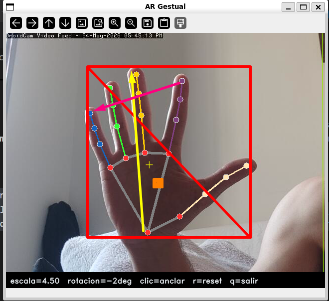
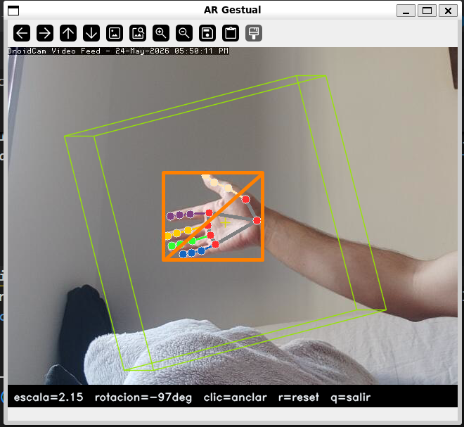
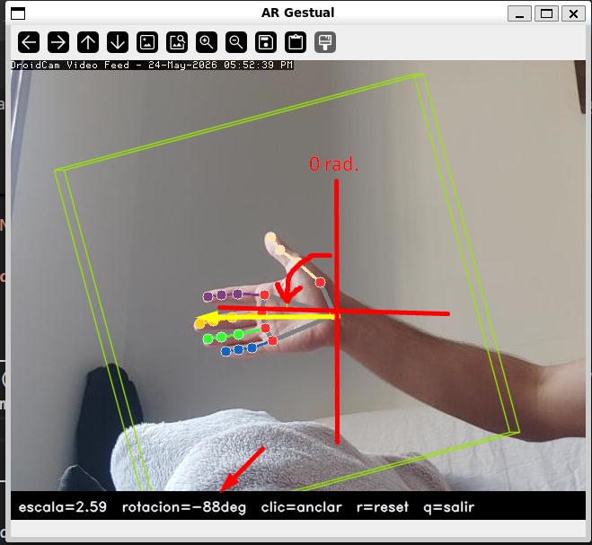
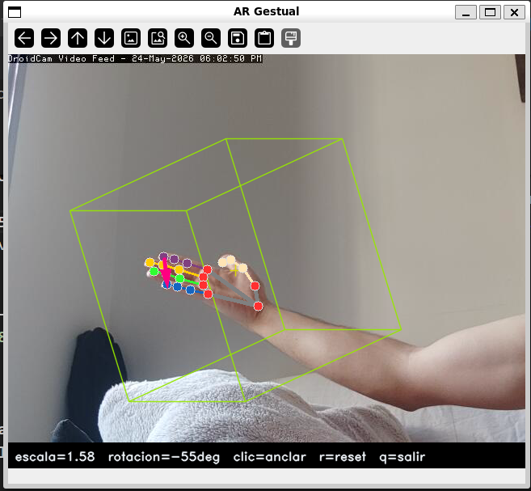
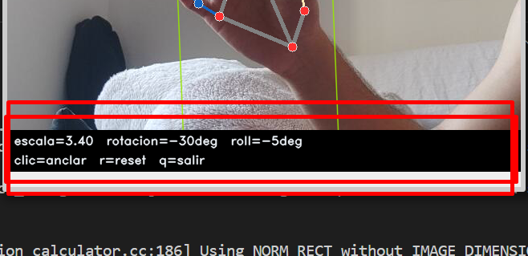

Ej. 2 — Controlador Sin Contacto¶
Enunciado
Haz un controlador sin contacto de varios grados de libertad que mida, al menos, distancia de la mano a la cámara y ángulo de orientación. Utilízalo para controlar alguno de tus programas.
Parámetros clave¶
| Parámetro | Valor | Descripción |
|---|---|---|
model_complexity |
0 | Modelo lite de MediaPipe; prioriza velocidad sobre precisión |
min_detection_confidence |
0.6 | Umbral mínimo para que MediaPipe confirme una detección nueva |
min_tracking_confidence |
0.6 | Umbral mínimo para mantener el tracking entre frames |
_INFER_SCALE |
0.5 | Factor de reducción del frame antes de pasar a MediaPipe |
_BBOX_FAR |
0.10 | Diagonal del bounding box normalizado con la mano lejana |
_BBOX_CLOSE |
0.55 | Diagonal del bounding box normalizado con la mano cerca |
Parámetro más sensible: _BBOX_FAR / _BBOX_CLOSE
Si la detección de distancia satura en 0 o en 1 con demasiada frecuencia, ajusta estos dos umbrales a la distancia real de trabajo con la cámara. _BBOX_FAR = diagonal típica cuando la mano está al fondo; _BBOX_CLOSE = diagonal típica cuando la mano está muy cerca.
Grados de libertad¶
HandController extrae 4 grados de libertad a partir de los 21 landmarks que MediaPipe estima en cada frame. El enunciado pide al menos distancia y ángulo; la implementación anade roll y posición XY de la palma para un control más completo.

GDL 1 — Distancia (distance ∈ [0, 1])¶

| extra_8_7_2/hand_controller.py — distancia | |
|---|---|
Controla la escala del objeto AR (_SCALE_MIN=0.3 … _SCALE_MAX=2.5).
GDL 2 — Ángulo de orientación / yaw (angle_deg)¶

| extra_8_7_2/hand_controller.py — yaw | |
|---|---|
Controla la rotación Y del objeto AR.
GDL 3 — Roll (roll_deg ∈ [-80°, +80°])¶

| extra_8_7_2/hand_controller.py — roll | |
|---|---|
La diferencia de coordenada Z (profundidad estimada por MediaPipe) entre el nudillo del índice (landmark 5) y el del menique (landmark 17) indica cuánto está girada la mano sobre el eje muneca-dedos. Controla la rotación X del objeto AR.
GDL 4 — Posición XY de la palma (norm_x, norm_y ∈ [0, 1])¶
| extra_8_7_2/hand_controller.py — posición XY | |
|---|---|
Controla el offset de desplazamiento del objeto respecto al ancla (±30 % del frame).
Pipeline de inferencia¶
| extra_8_7_2/hand_controller.py — process() | |
|---|---|
MediaPipe se ejecuta sobre el frame reducido al 50 % para reducir la latencia. Las coordenadas de landmarks ya vienen normalizadas a [0, 1] por MediaPipe, por lo que el cambio de escala no afecta a los cálculos.

Integración con run.py¶
run.py actúa como pegamento entre los tres ejercicios y es el único punto de entrada al sistema completo.
Contrato de interfaz: HandState¶
HandState es el dataclass que desacopla el Ej. 2 del Ej. 7: HandController.process() lo produce y ARViewer.update() lo consume. Ningún módulo conoce los detalles internos del otro.
Cuando detected=False, ARViewer.update() retorna inmediatamente sin modificar ningún estado y el objeto queda congelado en su última posición.
Bucle principal¶
El argumento --model conecta el ejercicio 8 con el sistema AR: si se pasa la ruta al .obj descargado de Colab, el modelo reconstruido reemplaza al cubo de referencia.
Decisiones de diseno¶
Inferencia a media resolución¶
MediaPipe Hands se ejecuta sobre el frame reducido al 50 % (_INFER_SCALE=0.5). Las coordenadas de landmarks se normalizan internamente por MediaPipe, por lo que la reducción no afecta a los cálculos de GDL. El resultado es aproximadamente 4× menos píxeles procesados respecto a resolución completa.
Bounding box como proxy de distancia¶
La distancia real de la mano a la cámara requeriría calibración de la cámara y conocimiento del tamano físico de la mano. El tamano del bounding box en coordenadas normalizadas es un proxy robusto y calibración-libre: siempre cae en el rango [0.10, 0.55] con independencia de la resolución del frame.
Limitaciones¶
Limitaciones conocidas
- El roll estimado por la coordenada Z de MediaPipe es inherentemente ruidoso; incluso con
α=0.18puede mostrar temblor en condiciones de iluminación variable. - Con luz de fondo (backlight) o mano parcialmente fuera del frame, MediaPipe pierde la detección y el objeto queda congelado en la última posición.
- Solo se detecta una mano (
max_num_hands=1); no hay soporte para control bimanual. - La escala de distancia asume una mano adulta a distancia típica de una webcam (~40-60 cm); en otras configuraciones, los umbrales
_BBOX_FARy_BBOX_CLOSEdeben recalibrarse.